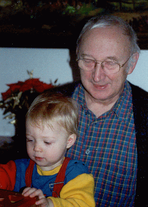
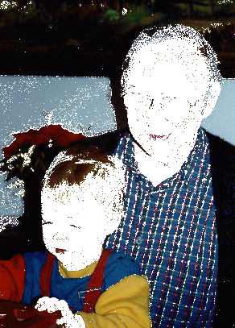

Here is a Java program (which uses ImagePPM.java) for inverting colour PPM images. Test it out on this image of faces. Use an image browser to find out typical RGB values of the faces.
Modify the program to detect faces and set all skin coloured pixels white.
It may be easier if normalised colour values rgb (i.e. chromaticities) are used instead, where
r=R/(R+G+B),
g=G/(R+G+B),
b=B/(R+G+B).
You should get a result something like this:

--->
